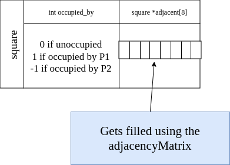
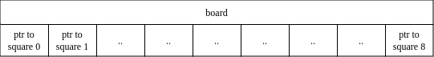
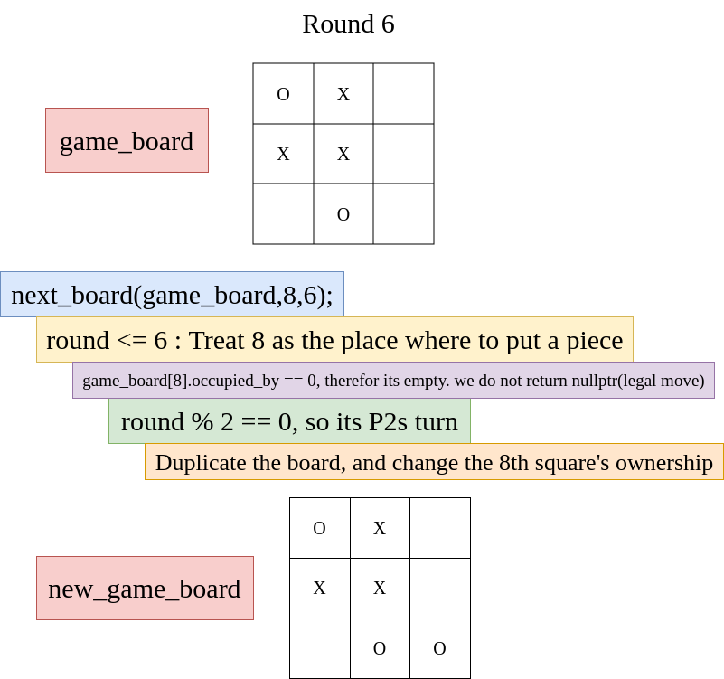
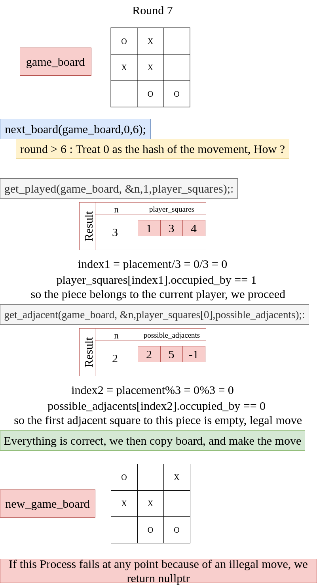
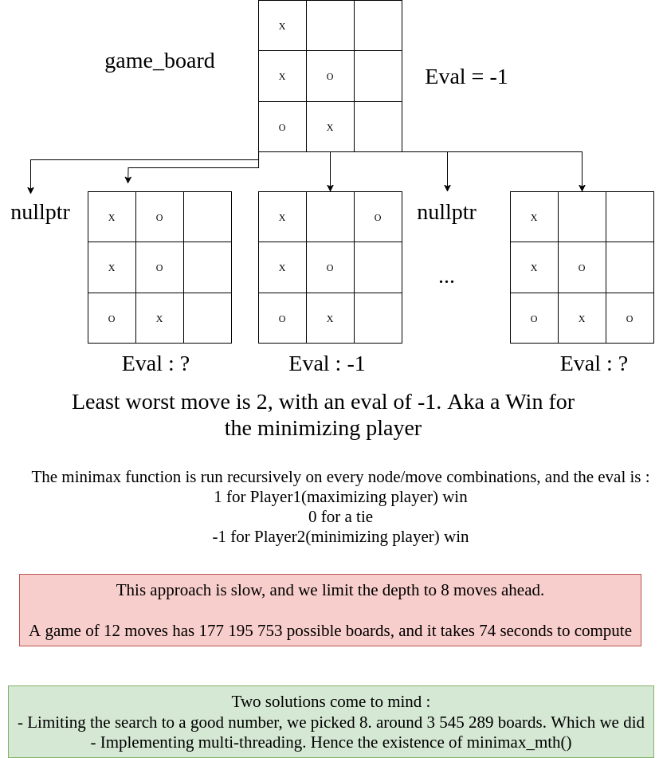

Writeup
Table of Contents
- 1. Introduction:
- 2. Technologies used:
- 3. Authors:
- 4. The Writeup:
- 4.1. Versions:
- 4.2. Project Structure:
- 4.3. Structs definitions:
- 4.4. Important Functions:
- 4.4.1. board createboard()
- 4.4.2. void getplayed(board gameboard, int *number, int player, int *squares)
- 4.4.3. void getadjacent(board gameboard, int *number, int place, int *adjacents)
- 4.4.4. board nextboard(board gameboard, int placement, int round)
- 4.4.5. pair minimax(board gameboard, const bool maximizing, int n, int maxdepth)
- 4.4.6. pair minimaxmth(board gameboard, const bool maximizing, int n, int maxdepth, int threadcount);
- 4.5. Game Modes:
- 4.6. Windows/Linux differences:
- 5. License
1. Introduction:
Achi is a Ghanian game that is similar to Tic-Tac-Toe, with the distinction of two phases and move sets rather than one, and the grid-like board (though it can be represented in the traditional Tic-Tac-Toe board). Players take turns placing one piece per round until both players have placed 3 pieces each, we call this The Placement Phase, we then enter the second phase The Movement Phase where players take turns moving pieces to one of their adjacent free spots. This is done until someone wins by forming a line (Horizontal, Vertical or Diagonal), or a draw if the game reaches the limited number of rounds.
2. Technologies used:
For this project, we decided to go with C23 as a C standard, SDL3 SDL3TTF and SDL3image for rendering, and cmake as a build system and Grixel Acme 9 as a font. And most importantly NOT BY AI. The code lives on This Github Repo.
Jetbrains CLion and Microsoft Visual Studio Code were used to make this project, and it was tested on Gentoo Linux and Windows 11.
3. Authors:
- MOUHOUS Mathya G3
- AIT MEDDOUR Fouâd-Eddine G1
4. The Writeup:
4.1. Versions:
When building this project, two(2) targets will be present:
- Achi-console: A minimal, console only version of the project, the first version we created and also the most minimal one. The main difference between it and the SDL version is the AI configuration options, as it has only one rather than three.
- Achi-SDL: The full version, using SDL3 to render the game on a window, has more features and is overall more polished.
4.2. Project Structure:
The main files in this project are as follow:
- CMakeLists.txt: configuration file for CMake which handles dependencies, building, and linking the different binaries, mingw-w64-x8664.cmake was used for crosscompiling to Windows from Linux.
- main.c: The entry point for the Achi-SDL target.
- main-con.c: The entry point for the Achi-console target.
4.2.1. /src and /include:
C & Header files with the reused functions across the two targets, and to overall organise and tidy the structure a bit.
4.2.2. /media
Directory that contains the font used, alongside other assets required in runtime.
4.3. Structs definitions:
A game board is made up of 9 squares which have an occupiedby attribute(Integer) and an array of 8 pointers to other squares, named adjacent. Making it a struct of size 72bytes with 8bytes for alignment. And a board is defined as a pointer to a square(or squares).


Making the Total Size of a single board: 728bytes.
4.4. Important Functions:
4.4.1. board createboard()
Self explanatory, it creates a board, and returns it, it is defined in include/gameboard.h and starts by allocating memory space for an array of 9 squares, and sets the gameboard variable to its pointer. And Loops over the squares, setting the ownership to 0 for none, and fills in the adjacent fields using the adjacencyMatrix[9][2] variable.
4.4.2. void getplayed(board gameboard, int *number, int player, int *squares)
Stores the indices of the squares played by player to squares and the number to number.
4.4.3. void getadjacent(board gameboard, int *number, int place, int *adjacents)
Stores the indices of the empty squares adjacent to the square place in the array adjacents and the number to number.
4.4.4. board nextboard(board gameboard, int placement, int round)
Returns a new board(or nullptr if the move is illegal) following the move placement. In the first 6 rounds it is treated as the index of the square to place the piece in, but after that, it is treated as follow:
- Placement / 3 is the index of the piece to move in the array returned by getplayed().
- Placement % 3 is the index of the square to move TO in the array returned by getadjacent().


4.4.5. pair minimax(board gameboard, const bool maximizing, int n, int maxdepth)

A simple implementation of the minimax Algorithm to get the best possible move in a round n up until the round maxdepth. Returns a pair of a best move and its evaluation.
Minimax is a deterministic Algorithm that works on the structure of a Tree, and the concept of the “Least Bad Move” as a playing strategy.
4.4.6. pair minimaxmth(board gameboard, const bool maximizing, int n, int maxdepth, int threadcount);
Same as the one before, but with multithreading with the pthreads.h library, only works in UNIX for now.
4.5. Game Modes:
4.5.1. Player VS Player:
Self Explanatory, the game is played between two human players until one of them wins, or the maximum round is reached.
4.5.2. Player VS AI:
The game is played between an AI using the minimax algorithm (with a depth of round + dlslimit, or 8 rounds ahead) the player who plays first is picked before starting the game.
4.5.3. AI VS AI:
A mode to visualise a game between two AIs, possible configuration for each AI is:
- No Randomness (Same as Player VS AI, aka using minimax), two Non Random AIs playing against eachother will result in an infinite loop.
- Some Randomness: Plays using the minimax algorithm, but there is a chance of making a random move, this chance is determined by the entropy variable.
- All Randomness: All moves are random and unpredictable*.
4.6. Windows/Linux differences:
4.6.1. Randomness:
When building for Windows, srand() is used to handle randomness, alongside using time as the seed, which is cryptographically insecure. On GNU/Linux on the other hand, arc4random is used.
4.6.2. Multithreading:
When Building for windows, minimaxmth is NOT used as pthreads.h is not part of the C standard for Windows, and can’t be used in mingw. On Linux however, its used with 2 threads as a sane default.
5. License
Copyright 2025 MOUHOUS Mathya & AIT MEDDOUR Fouâd-Eddine
Redistribution and use in source and binary forms, with or without modification, are permitted provided that the following conditions are met:
- Redistributions of source code must retain the above copyright notice, this list of conditions and the following disclaimer.
- Redistributions in binary form must reproduce the above copyright notice, this list of conditions and the following disclaimer in the documentation and/or other materials provided with the distribution.
- Neither the name of the copyright holder nor the names of its contributors may be used to endorse or promote products derived from this software without specific prior written permission.
THIS SOFTWARE IS PROVIDED BY THE COPYRIGHT HOLDERS AND CONTRIBUTORS “AS IS” AND ANY EXPRESS OR IMPLIED WARRANTIES, INCLUDING, BUT NOT LIMITED TO, THE IMPLIED WARRANTIES OF MERCHANTABILITY AND FITNESS FOR A PARTICULAR PURPOSE ARE DISCLAIMED. IN NO EVENT SHALL THE COPYRIGHT HOLDER OR CONTRIBUTORS BE LIABLE FOR ANY DIRECT, INDIRECT, INCIDENTAL, SPECIAL, EXEMPLARY, OR CONSEQUENTIAL DAMAGES (INCLUDING, BUT NOT LIMITED TO, PROCUREMENT OF SUBSTITUTE GOODS OR SERVICES; LOSS OF USE, DATA, OR PROFITS; OR BUSINESS INTERRUPTION) HOWEVER CAUSED AND ON ANY THEORY OF LIABILITY, WHETHER IN CONTRACT, STRICT LIABILITY, OR TORT (INCLUDING NEGLIGENCE OR OTHERWISE) ARISING IN ANY WAY OUT OF THE USE OF THIS SOFTWARE, EVEN IF ADVISED OF THE POSSIBILITY OF SUCH DAMAGE.